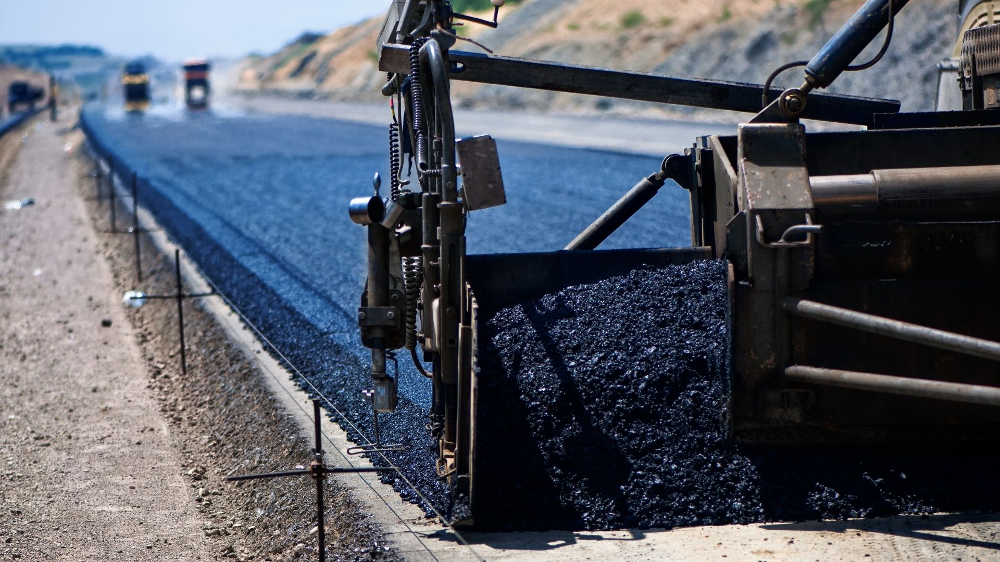

Practical insights and market intelligence for
international buyers sourcing Iranian bitumen.
How to Choose a Reliable Bitumen Supplier for International Projects
Choosing the right bitumen supplier is one of the most critical decisions for road construction
companies, importers, and infrastructure contractors. A wrong choice can lead to inconsistent
quality, delayed shipments, or costly compliance issues.
1. Verify Origin and Refinery Source
Always confirm the origin of the bitumen and whether it is supplied directly from a refinery
or through multiple intermediaries. Refinery-direct supply ensures consistent specifications,
traceability, and stable long-term pricing.
2. Demand Full Technical Documentation
A professional exporter must provide a Certificate of Analysis (COA), MSDS, packing list,
and bill of lading. These documents are not optional — they protect buyers during customs
clearance and project execution.
3. Evaluate Export Experience
International bitumen trade involves logistics, port handling, packaging standards,
and Incoterms knowledge. Suppliers with proven export experience reduce risk significantly.

A reliable bitumen supplier is not defined by price alone, but by consistency, transparency,
and the ability to deliver under real-world conditions.
Understanding Incoterms 2020 in Bitumen Export Contracts
Incoterms define responsibilities between buyers and sellers during international trade.
In bitumen exports, misunderstanding Incoterms can lead to unexpected costs and disputes.
FOB (Free on Board)
Under FOB terms, the seller delivers the bitumen onto the vessel at the port of origin.
Risk transfers to the buyer once the cargo is loaded.
CFR (Cost and Freight)
CFR includes ocean freight costs paid by the seller, but insurance remains the buyer’s responsibility.
This term is common for bulk and drum bitumen shipments.
CIF (Cost, Insurance, and Freight)
CIF offers more protection for buyers, as insurance is included up to the destination port.
Many first-time buyers prefer CIF contracts for reduced risk.
Selecting the right Incoterm aligns risk, cost control, and logistics strategy with your project needs.
Global Bitumen Market Trends and Buyer Demand Outlook
Global demand for bitumen is driven by infrastructure development, road rehabilitation,
and urban expansion. Emerging markets in Asia, Africa, and the Middle East are leading growth.
Infrastructure Investment Growth
Government-funded road and transport projects continue to push demand for penetration
grade and modified bitumen products.
Supply Chain Optimization
Buyers increasingly prioritize suppliers with stable logistics, bulk export capacity,
and reliable packaging options to avoid disruptions.
Strategic sourcing decisions today protect long-term infrastructure investments tomorrow.
Common Mistakes Buyers Make When Importing Bitumen
Even experienced buyers can face costly issues if critical steps are overlooked during
procurement and logistics planning.
Ignoring Quality Verification
Relying on price alone without independent inspection can lead to off-spec material.
Unclear Packaging Specifications
Packaging affects handling, storage, and unloading. Buyers must align packaging with
destination infrastructure.
Underestimating Logistics Complexity
Port congestion, vessel availability, and customs procedures all affect delivery timelines.
Avoiding these mistakes protects your budget, timeline, and project reputation.